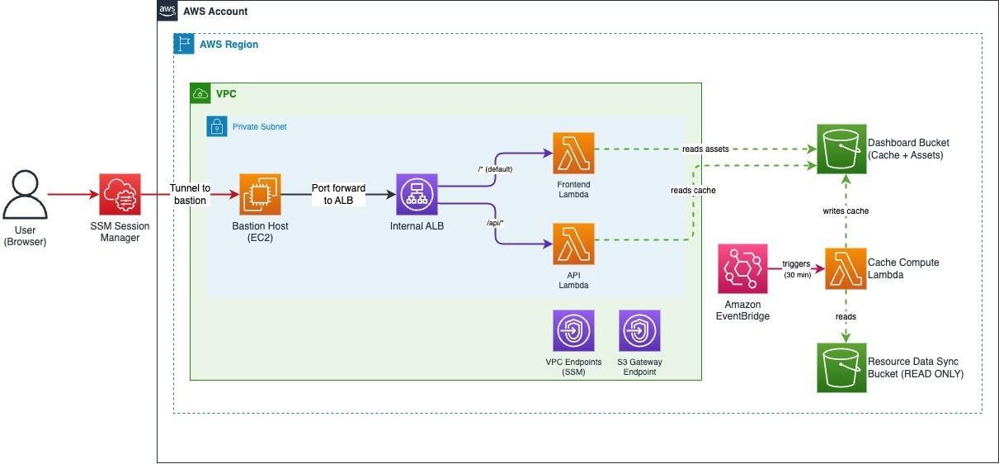

Xây dựng Dashboard quản lý vá lỗi đa tài khoản bằng Kiro – Bài học đắt giá của một Intern về Phát triển theo thông số kỹ thuật
Là một sinh viên thực tập đang theo chân các đàn anh trong đội ngũ DevOps. Ở các doanh nghiệp lớn, việc đảm bảo an toàn hệ thống thông qua cập nhật bản vá (Patch Management) là cực kỳ quan trọng. Hệ thống của team mình trải rộng trên hàng chục, hàng trăm tài khoản AWS khác nhau. Việc các anh Senior phải đi check từng tài khoản xem server nào chưa vá lỗi thực sự là một “cơn ác mộng” thủ công.
Một bài viết của tác giả Justin Thomas: “Xây dựng bảng điều khiển tuân thủ bản vá nhiều tài khoản với thông số kỹ thuật của Kiro”. Ban đầu, mình nghĩ đây chỉ là một bài hướng dẫn code Dashboard thông thường bằng React và Lambda. Nhưng sau khi đọc và tự tay làm thử, thứ mình học được nhiều nhất không phải là vài dòng code, mà là quy trình phát triển hệ thống một cách có hệ thống và bảo mật tuyệt đối thông qua công cụ AI Kiro.
Bài toán thực tế: Khi hệ thống phình to và “Nỗi ác mộng” quản lý bản vá
Khi doanh nghiệp mở rộng quy mô, AWS Systems Manager (SSM) Patch Manager là công cụ tuyệt vời để tự động vá lỗi hệ điều hành. Dữ liệu này sau đó được đẩy về một vùng lưu trữ tập trung (Amazon S3) thông qua Resource Data Sync.
Tuy nhiên, bài toán đặt ra là: Làm sao để tổng hợp và hiển thị đống dữ liệu thô khổng lồ đó thành một bảng điều khiển (Dashboard) trực quan theo thời gian thực? Nếu mỗi lần xem Dashboard, hệ thống lại phải quét qua hàng ngàn file trên S3 thì chi phí sẽ cực kỳ tốn kém và tốc độ tải trang sẽ rất chậm.
- Làm sao để công cụ nội bộ này chỉ dành riêng cho nhân sự trong công ty, tuyệt đối không được lộ diện (no public endpoint) ra internet để tránh bị tin tặc tấn công?
Giải pháp: Dashboard phi máy chủ kết hợp quy trình Driven-by-Specification của Kiro
Điều làm mình “mắt chữ O mồm chữ A” là cách tác giả không lao vào code ngay, mà sử dụng công cụ AI Kiro để quản lý toàn bộ vòng đời phát triển thông qua 3 giai đoạn: Yêu cầu (Requirements) -> Thiết kế (Design) -> Nhiệm vụ (Tasks).
Hệ thống Dashboard được xây dựng hoàn toàn trên nền tảng Serverless và bảo mật tối đa với luồng vận hành như sau:
- Truy cập bảo mật bằng SSM Tunnel: Developer muốn vào xem Dashboard phải chạy lệnh SSM Session Manager trên máy local để mở một đường hầm bảo mật (Port Forwarding qua cổng 8443) đi qua máy chủ pháo đài (Bastion host) vào thẳng Cân bằng tải nội bộ (Internal ALB). Hệ thống hoàn toàn không có IP công khai!
- Giao diện Cloudscape mượt mà: Yêu cầu từ trình duyệt qua ALB sẽ kích hoạt hàm Frontend Lambda để tải ứng dụng React (sử dụng Hệ thống thiết kế Cloudscape của AWS).
- Chiến lược bộ nhớ đệm thông minh (Two-tier caching): Thay vì đọc trực tiếp dữ liệu thô từ S3 Resource Data Sync, một hàm Lambda tính toán riêng biệt (Cache Lambda) sẽ được kích hoạt mỗi 30 phút bởi Amazon EventBridge. Nó có nhiệm vụ “gọt giũa”, tổng hợp dữ liệu trước thành các file JSON gọn nhẹ lưu vào tiền tố
/cache/trên S3 của Dashboard. - Tải trang trong tích tắc: Khi chọn xem tổng quan hoặc chi tiết một tài khoản, API Lambda chỉ việc vào phân vùng cache đọc file JSON lên. Kết quả là Dashboard phản hồi chỉ trong vài giây và chi phí vận hành gần như bằng 0 (chỉ trả tiền khi có request).

Điểm sáng tối ưu: Quản trị dự án bằng các “Tài liệu chỉ đạo” (Steering Files)
Là một Intern, mình thường thấy các chatbot AI thông thường rất hay “quên” ngữ cảnh và tiêu chuẩn thiết kế của dự án sau vài câu chat. Kiro đã giải quyết triệt để việc này bằng các Tài liệu chỉ đạo (.kiro/steering/). Tác giả đã đóng gói toàn bộ tư duy kiến trúc vào 5 file markdown:
architecture.md: Quy định rõ việc dùng ALB nội bộ, mạng con riêng (Private Subnet).data-schemas.md: Định nghĩa cấu trúc file JSON trong bộ nhớ đệm.compliance-logic.md: Định nghĩa logic kinh doanh (ví dụ: một server chỉ được coi là tuân thủ khi số bản vá bị thiếu bằng 0).frontend-specs.md: Các tiêu chuẩn giao diện Cloudscape.security.md: Ràng buộc bảo mật nghiêm ngặt (ALB bắt buộc TLS 1.3, S3 phải bật mã hóa SSE-S3 và chặn truy cập công khai).
Nhờ có các file này, khi mình ra lệnh cho Kiro: “Xây dựng bảng điều khiển…”, AI tự động hiểu và tuân thủ 100% các nguyên tắc bảo mật của doanh nghiệp mà không cần mình nhắc lại. Ngoài ra, việc kết hợp với các máy chủ MCP (Model Context Protocol) như Máy quét bảo mật và AWS IaC giúp Kiro tự kiểm tra mã nguồn CloudFormation xem có vi phạm chính sách bảo mật nào của AWS hay không trước khi xuất xưởng.
Trải nghiệm triển khai thực tế bằng “Một cú click”
Sau khi Kiro hoàn thành danh sách nhiệm vụ từ việc viết code Lambda bằng Python 3.11 đến xây dựng giao diện React, mình chỉ cần nhờ Kiro tạo một tập lệnh tự động hóa:
./deploy.sh deploy patch-dashboard my-resource-datasync-bucket us-east-1
Tập lệnh này lo từ A-Z: đóng gói Lambda, tự ký chứng chỉ TLS nạp vào ACM cho ALB, cấu hình Security Group thông qua S3 Gateway Endpoint, đẩy code lên S3 và kích hoạt lượt chạy cache đầu tiên. Khi màn hình in ra dòng chữ hướng dẫn lệnh aws ssm start-session, mình bật trình duyệt lên và toàn bộ thông tin tuân thủ bản vá của hàng trăm tài khoản đã hiện ra trực quan với đầy đủ biểu đồ hình tròn và danh sách server lỗi.
Góc nhìn cá nhân của một Intern
Học việc trong môi trường Cloud/DevOps, mình thường bị ngợp bởi số lượng dịch vụ và các cấu hình bảo mật phức tạp. Bài blog này đã cho mình một bài học đắt giá: Đừng bao giờ vội vã gõ code khi chưa có thông số kỹ thuật rõ ràng.
Cách tiếp cận “Driven-by-Specification” của Kiro kết hợp với các tài liệu chỉ đạo (Steering Files) không chỉ giúp tăng tốc độ phát triển phần mềm bằng AI, mà quan trọng hơn là nó ép bản thân mình (và cả AI) phải tuân thủ các quy chuẩn thiết kế, bảo mật nghiêm ngặt nhất của môi trường Enterprise ngay từ những dòng tài liệu đầu tiên.
Kết luận
Nếu bạn đang tìm kiếm một giải pháp theo dõi an toàn bảo mật hệ thống đa tài khoản vừa rẻ, vừa an toàn, lại vừa tải nhanh, thì kiến trúc Serverless Dashboard này là một mô hình điểm 10. Đặc biệt, nếu bạn đang muốn nâng cấp quy trình làm việc cùng AI từ “mì ăn liền” lên mức độ “chuẩn doanh nghiệp”, hãy thử nghiên cứu phương pháp phát triển bằng thông số kỹ thuật của Kiro.
Cảm ơn mọi người đã theo dõi bài chia sẻ của một Intern! Mọi người trong team có đang dùng công cụ AI nào để hỗ trợ viết các mẫu IaC (CloudFormation/Terraform) một cách an toàn như thế này không? Hãy để lại ý kiến cho mình học hỏi thêm nhé!

Toàn bộ source code và các file chỉ đạo mẫu đều được đính kèm tại đây: AWS Blog - Build a Multi-Account Patch Compliance Dashboard with Kiro Specs